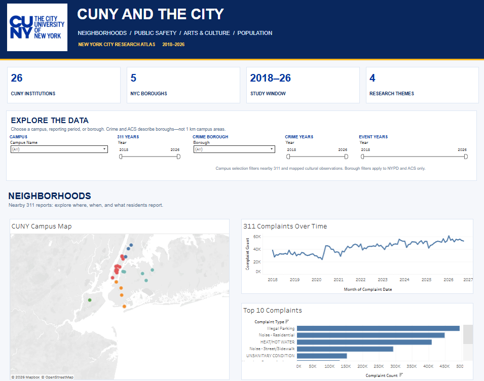
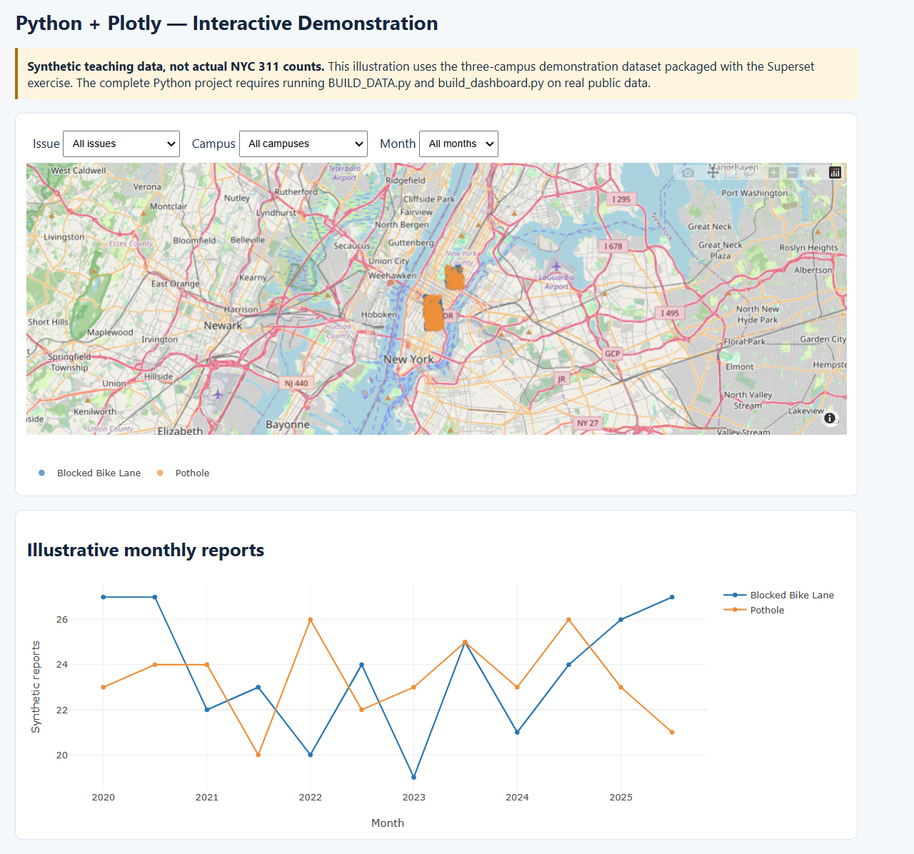
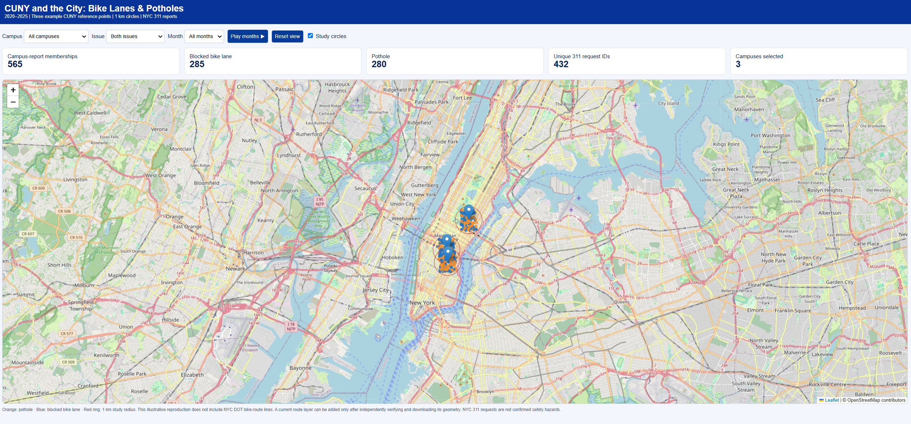

Published dashboard
Tableau Public
Campus-area report map, monthly NYC trends, and comparisons.
Understanding street conditions around CUNY campuses—and comparing three ways to turn public records into useful visualizations.
How did 311 reports of potholes and blocked bicycle lanes vary around selected CUNY campuses from 2020 through 2025? This is one part of a broader study of access to CUNY: transportation, physical facilities, nearby streets, and access to information.
These two categories describe different problems. They are presented separately, without converting reported complaints into a claim about the safety of any particular route.
Explore the published Tableau project and two separate open-source demonstrations. The demonstrations show the workflow; their example records must not be treated as measured NYC findings.

Campus-area report map, monthly NYC trends, and comparisons.

Interactive reconstruction using example records, not verified research counts.

Database-centered workflow with a separate interactive street map using example records.
If the embedded dashboard does not load in your browser, use the direct dashboard link above.
How did reports of potholes and blocked bicycle lanes differ around selected CUNY campuses from 2020 to 2025, and what can maps and monthly charts tell us about those differences? This study is part of a broader investigation of access to CUNY across the boroughs. Access involves more than information: it also includes campus facilities, transportation, and conditions in surrounding streets. I selected these issues because they can affect people traveling by bicycle or scooter, but they should be examined separately.
I used New York City’s 311 Service Requests, recorded from submissions by the public and provided through NYC Open Data. The study period is January 2020 to December 2025. Relevant fields include the request identifier, date, problem classification, borough, and geographic coordinates. Tableau and Python were designed around 26 campus reference locations with 500-meter study areas; the Superset teaching version uses three example locations with 1,000-meter study areas.
The report map identifies where complaints were filed; the campus bars compare selected locations; and the monthly lines show the citywide pattern over time. The citywide series covers a different geographic population from the campus comparisons. Reports are not independent verification of hazardous street conditions, and differences in reporting behavior may influence counts.
I generally prefer open-source applications because they let me inspect the process and retain control over files. Tableau nevertheless makes it easier to produce readable charts from prepared data and publish them. An external embed may be more practical for CUNY Academic Commons than running custom code inside WordPress, but it is not automatically more secure. Published files and third-party content still need review.
I compared Tableau, Python with Plotly, and Apache Superset with a separate Leaflet map. I wrote an illustrated manual for each process—from installation and data collection to checks, presentation, and publication—to see whether another student could reproduce the work.
Tableau was the most approachable for a presentation. Python required more programming but made repetitive collection and validation easier to document. Superset took the most preparation because it involved a database and additional services, but that arrangement is useful for continuing, shared research. These are workflow findings, not a controlled speed or accuracy test: the three implementations do not yet use identical reference points and distance rules.
For future research I would use Python for collection and quality checks, Tableau for accessible public presentations, and Superset for a maintained collaborative dashboard. The next step is to validate a single campus list and uniform geographic rule so the results can be compared fairly.
The sizes below refer to uploaded instructional packages, not complete installed systems. Times and disk budgets are planning estimates, not recorded benchmarks.
| Measure | Tableau | Python | Superset + Leaflet |
|---|---|---|---|
| Project ZIP | 8.90 MB | 1.38 MB | 6.79 MB |
| Install estimate | 10–25 min | 10–25 min | 30–90 min |
| Build / configure* | 45–120 min | 5–20 min to rerun | 60–180 min |
| Suggested free disk | 5 GB | 5 GB | 20 GB |
| Best suited to | Visual teaching | Repeatable processing | Shared database dashboards |
*Python time excludes writing and debugging the original code. Superset uses a different demonstration area, so incident counts are not directly comparable.
Each guide covers what to install, where the data come from, how to build the visualization, and how to check the result.
Source data: NYC 311 Service Requests. These download links work when all files are hosted together.